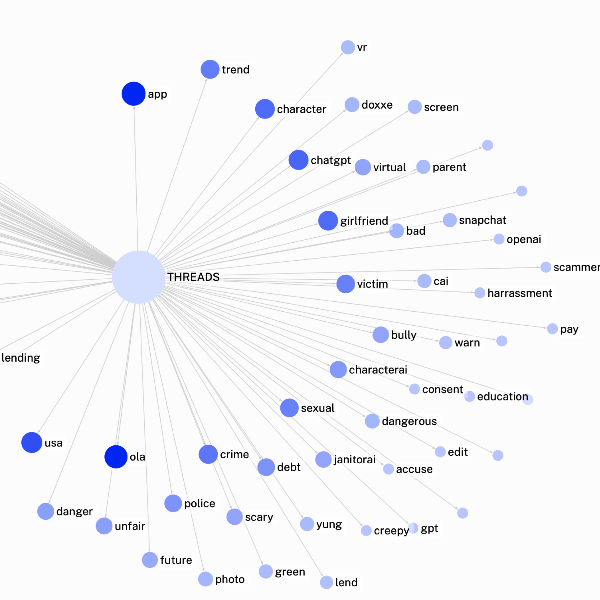
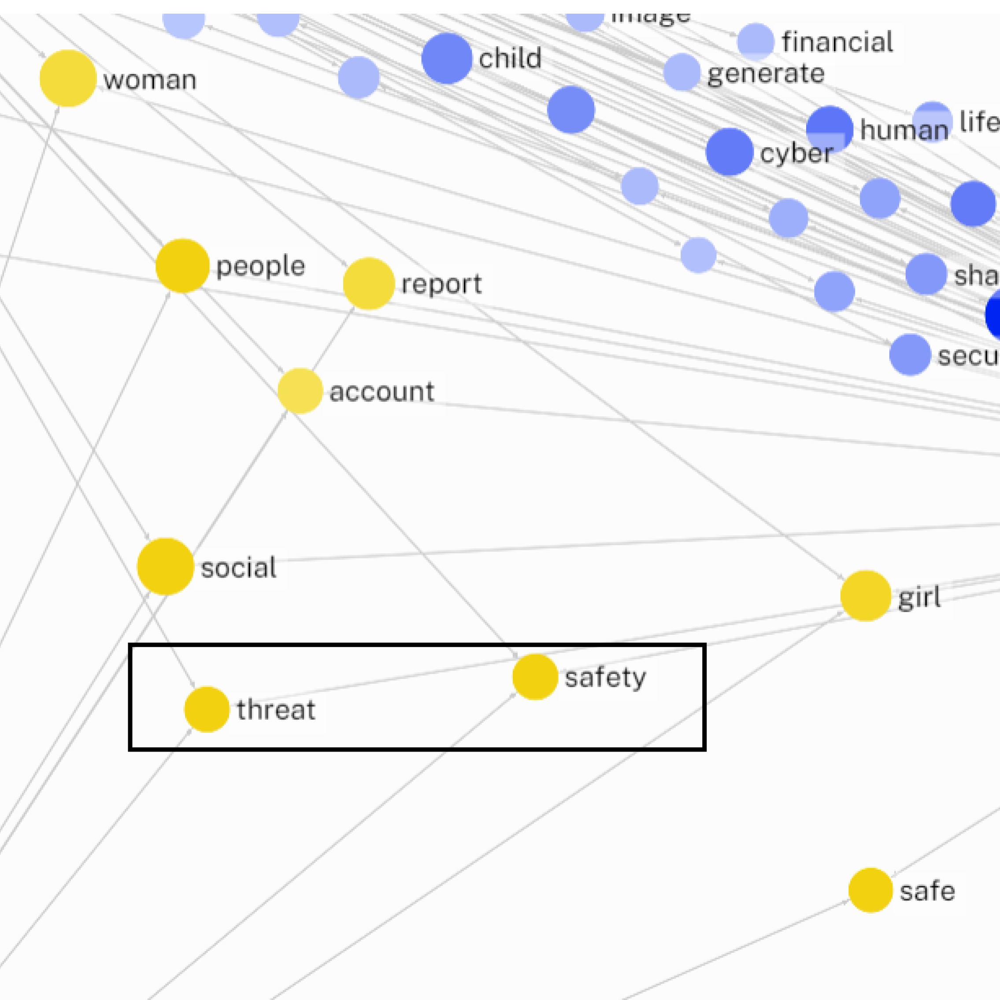
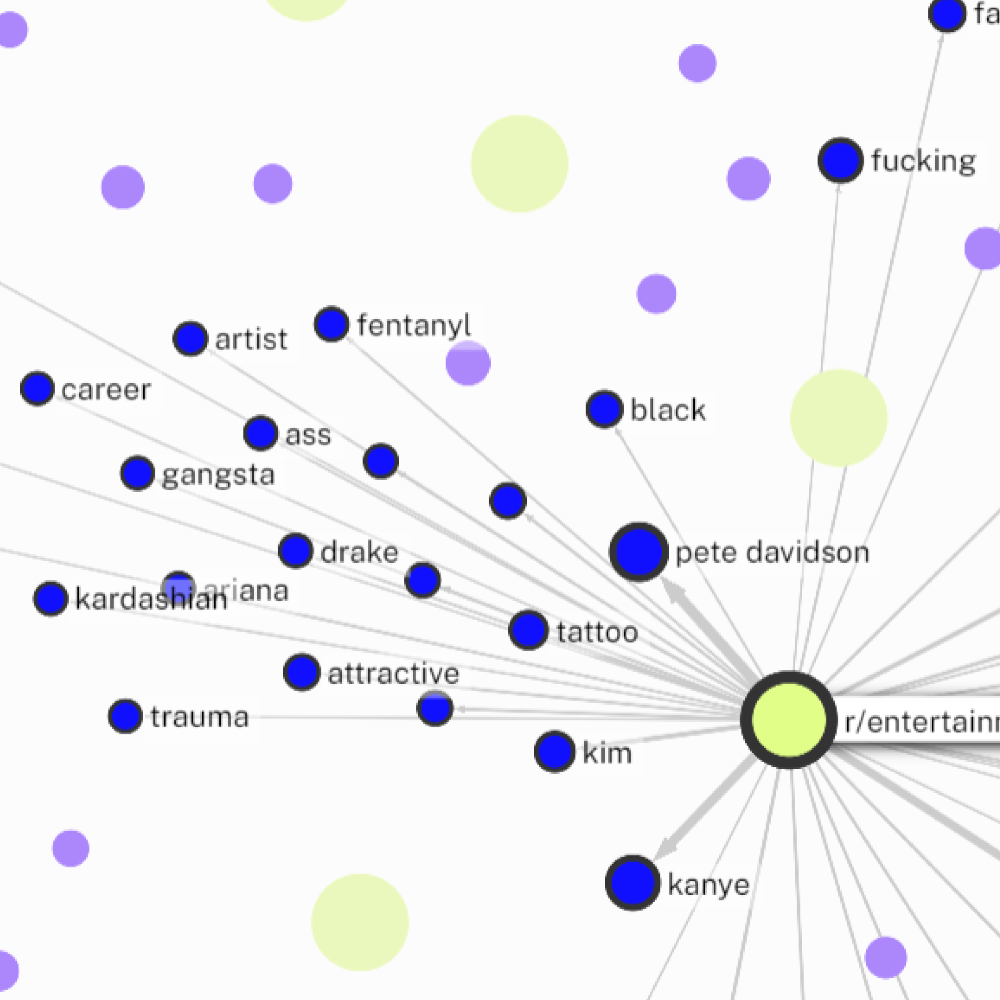
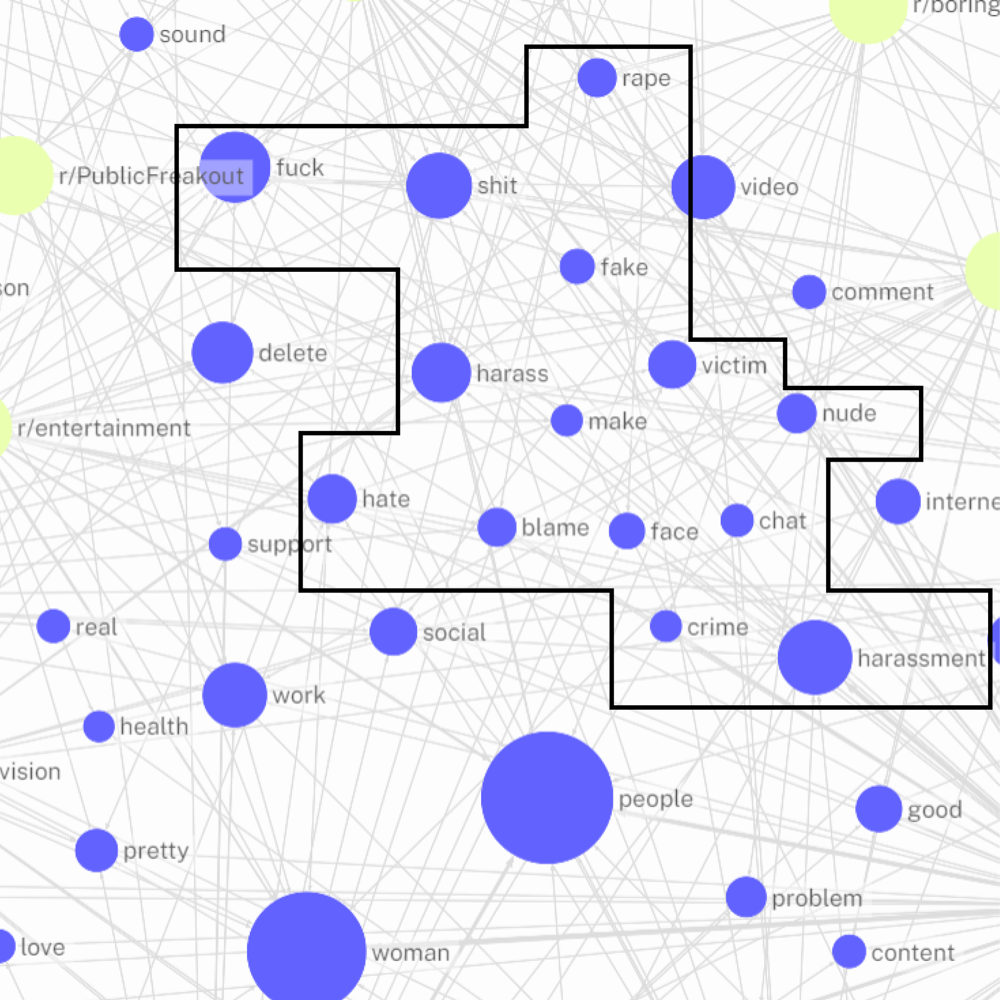
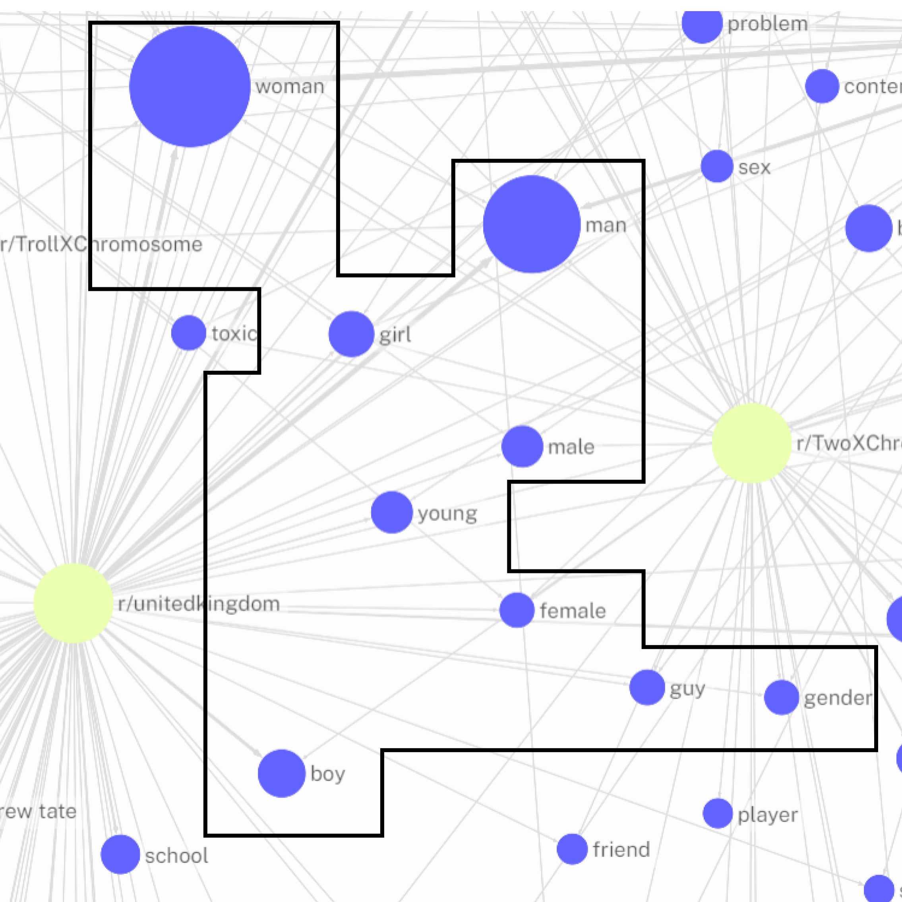
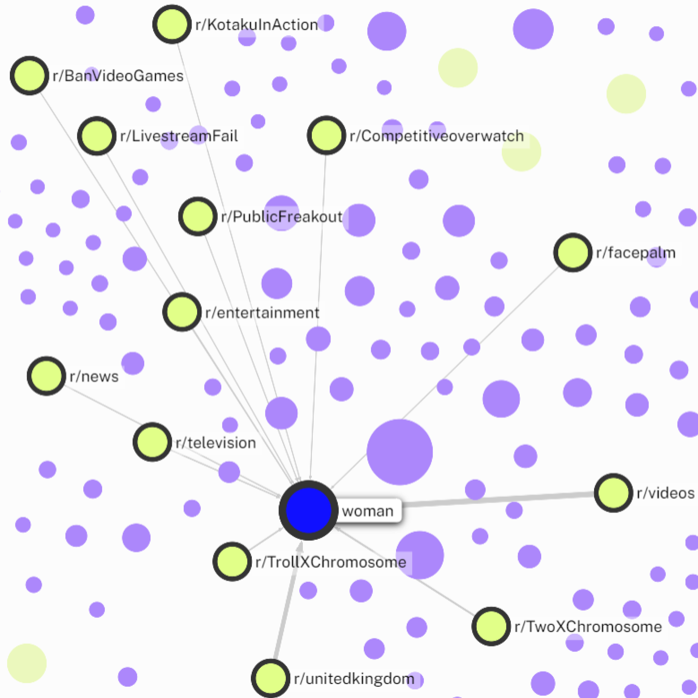

Mapping Online Harassment
We investigated the intersection of Online Harassment and AI, addressing specific tools, prevalence, and accessibility. Our study also analyzed the language used in online harassment discussions, identifying prevalent words across platforms. We explored platforms with a higher concentration of such words and delved into specific communities fostering their extensive use. This comprehensive approach illuminates the multifaceted dimensions of Online Harassment and its connection to artificial intelligence and synthetic media.
Data Scraping
The tools we used to scrape content online were mainly from
Apify and
Webscraper.io
Scraping data from a generic “Online harassment” query we obtained:
- 10.000 elements from Reddit
- 650 elements from X (Twitter)
- 270 elements from Tiktok
- 100 elements from Threads
- 2500 elements regarding AI tools from Kaggle
Cleaning
Reading every corpus, we deleted every non user generated content
With
Google Colab NLP Toolkit, removed stopwords. After transforming the file in a .docx we uploaded the file on
AntConc
The software finds the word before and after, counting and making groups (Trinomes) that were discarded in our process, focusing on single words and their density.
Back to Colab, we did a lemmatization in order to make the wording.
Take a look at our
dataset →
AI Tools Exploration
Our initial undertaking involved a comprehensive mapping of the diverse array of AI tools available online, categorizing them based on their respective types, encompassing text, image, 3D video, audio, code, business, and other classifications. Subsequently, we extended our analysis to gauge the accessibility of these tools by delineating their pricing structures.
Keyfindings
- The most prevalent category of tools is "business," followed by "text," with "video" and "3D" being less common.
- Most of the tools are easily accessible, with the majority being either free or falling within the lower price range (0.1-10$).
- Across different categories, there are no significant variations in the distribution across price ranges. Where there is a higher presence of tools, the number of both free and expensive tools increases proportionally, maintaining a relatively balanced distribution.
Online Harassment Across Platforms: Word Analysis
Following that, the mapping process began with an exploration of discussions regarding "online harassment" across Threads, TikTok, and Twitter. A systematic collection and analysis of all comments related to the topic were conducted, extracting the words utilized by individuals to articulate their perspectives. Subsequently, these words were visually represented in a graphic, their positions signifying prevalence on each platform. Words positioned at the center of the graphic indicated commonality across all three platforms, providing insights into the shared discourse surrounding online harassment.
Keyfindings

Threads use of terms on AI-linked harassment
It can be noticed that within Threads a notably specific and technical language about online harrassment linked to artificial intelligence is employed.

Scarcity of shared terms
It is interesting to observe the scarcity of common terms among the three platforms, but it's curious to notice in the center the binary relationship between "safety" and "threat".
Insights from 32 subcommunities
All data extracted from Reddit originates from 32 different subreddits, which we have mapped in a visualization. The size of each bubble in the visualization is proportional to the number of posts and comments for each subreddit. This mapping and overview of the various subreddits are essential to understand the starting point of the dialogue, thus revealing the intentions and perspectives of the community, which may lead to various polarizations. The topics of the subreddits range from news and politics in general to information about entertainment and technology.
Keyfindings
- The more specific and polarized communities, as evident from their descriptions, include KotakuInAction, the hub on Reddit for the GamerGate – a controversial 2014 movement on gaming ethics and journalism, marked by harassment, misogyny, and discussions on industry transparency and inclusivity. On the other hand, we have TwoXChromosomes, intended as a space for sharing content from a feminine perspective to promote respect. The only subreddit closest to the research query for topics is undoubtedly Instagramreality, aiming to showcase edited photos and reveal the truth behind them.
Reddit's Take on Online Harassment
Next, a specific emphasis was directed towards the Reddit platform, conducting an extensive overview of the language employed in discussions about online harassment. Notably, our examination delved into presenting distinctive perspectives within each subreddit community addressing the topic. These communities showcase diverse viewpoints, often positioned in opposition, characterized by unique tones of voice and perceptions of the subject matter.
Keyfindings

Subreddit specific lexicons
It is interesting to observe the scarcity of common terms among the three platforms, but it's curious to notice in the center the binary relationship between "safety" and "threat.

Shared terms and controversies across ubreddits
Shared terms and keywords prevalent across diverse communities invariably center on online harassment and the use of assertive language, encompassing terms such as "rape," "sex," "porn," and "hate." The language employed often incorporates elements that could be characterized as constituting hate speech or potentially offensive content, intricately woven into the overarching themes intrinsic to the respective topics.

Gendered threads
Examining the linguistic landscape of two contrasting subreddits, r/unitedkingdom and r/TwoXChromosomes, reveals a thematic cluster of terms predominantly related to gender and identity.

'Woman' as a marker for gender harassment
The term most consistently shared across the platforms is "woman," indicating a likely association with the category of "gender harassment."
Evolution of keywords
This race bar chart illustrates the temporal evolution of key terms within a dataset encompassing 10,000 subreddits, comprising both posts and comments. The selected timeframe spans from 2020 to 2023, offering insight into lexical trends over this short period. The chosen words were arbitrarily selected from the top 30 most frequently used terms on Reddit, ensuring diversity, interest, and significance in capturing a trend.This race bar chart illustrates the temporal evolution of key terms within a dataset encompassing 10,000 subreddits, comprising both posts and comments. The selected timeframe spans from 2020 to 2023, offering insight into lexical trends over this short period. The chosen words were arbitrarily selected from the top 30 most frequently used terms on Reddit, ensuring diversity, interest, and significance in capturing a trend.
Keyfindings
- Primarily, a positive correlation emerged between the terms "Ai" and "Video" over the years, suggesting a rise in content involving artificial intelligence in online videos on the platform.
- Another critical point is the association between mentions of "Hate" and "racist," with a peak in 2021 followed by a decline in 2022. This may indicate increasing awareness and actions against racism during that period, reflecting an active response to the issue.
- The analysis highlights a consistent growth in interest concerning artificial intelligence, indicated by the steady increase in mentions of "Ai" from 2020 to 2023. This suggests a growing concern or curiosity within the Reddit community regarding AI-related topics.
- Furthermore, the consistent mention of "Video" indicates an ongoing community focus on multimedia content, emphasizing that a significant portion of discussions and content on Reddit revolves around video material.
- Lastly, the term "Help" showed a continuous increase during the considered period, suggesting a rise in help requests or discussions on support-related topics within the platform. This underscores a growing community interaction on support-related issues.